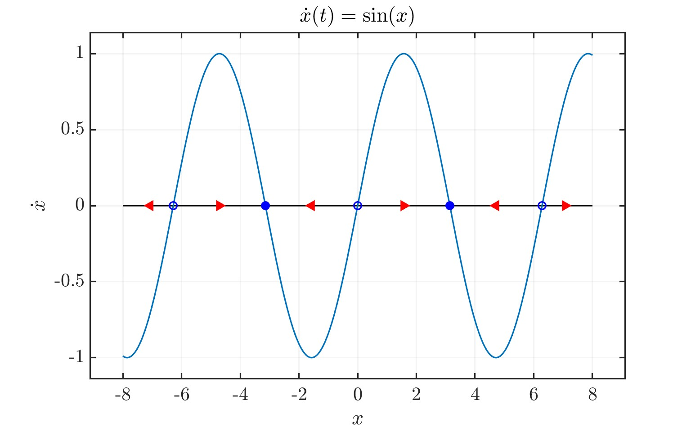
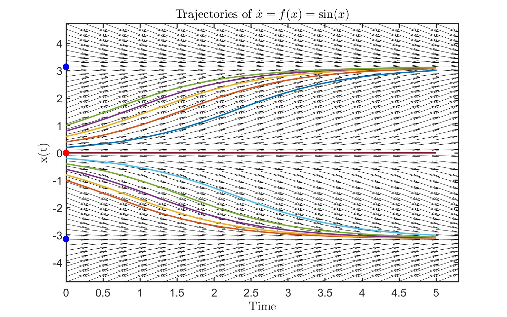

Tyler Jones
University of Wisconsin-Madison
1.2 The Phase Portrait
To better analyze long term behavior and avoid solutions to ODE's that take and infinite amount of time to converge, is to plot velocity vs the phase space: \( \dot{x} = f(x)\) vs \(x\). For convention, we say that \(f(x) \gt 0\) implies the solution moves to the right, and when \(f(x) \lt 0\) the solution moves to the left. Let's take a look at the following example:
 We note that our solution does not reach the stable solution \(\pi \) in finite time, it takes an infinite amount of time. Also, we see that the stationary/fixed points are solutions to \(f(x^*)=0 \)
1.3 Classification
THEOREM 1.1 Let \(f:\mathbb{R}\rightarrow\mathbb{R} \) be \(C^1 \). Let \( x:[0,T^*) \rightarrow\mathbb{R} \) be a solution to the ODE \( \dot{x}=f(x) \), where \(T^* \) is the maximal time of existence. Then either
(1) \(x\equiv x^* \in \mathbb{R} \) is an equilibrium, that is, \(f(x^*)=0 \) or
(2) \(x \) is strictly monotomic (strictly increasing or strictly decreasing)
In case (2), either
(i) \(x \) converges to an equilibrium as \(t \rightarrow+\infty \), or
(ii) \( \lim_{t\rightarrow T_-^*}|x(t)|=+\infty \) (x becomes unbounded in finite time or infinite time)
1.4 Maximal Time of Existence
To make sense of "maximal time of existence", we need to check that the solutions to the initial value problem (IVP) exist and are unique for short time.
THEOREM 1.2 (Short-time existence and uniqueness). Let \(J \sub \mathbb{R} \) be an open interval in state space. Suppose that \(f:J\rightarrow \mathbb{R} \) is \(C^1 \). Let \(J' \sub J \) be a compact interval. Then there exists \(\epsilon \gt0 \) such that, for every \(x_0 \in J' \) and \(t_0 \in \mathbb{R} \), there exists a unique solution \(x:(t_0-\epsilon,t_0+\epsilon)\rightarrow J \) to the IVP
$$ \dot{x}=f(x), \hspace{10pt} x(t_0)=x_0 $$Moreover, \(\epsilon \) depends only on \(\sup_J \frac{|f|}{d}+|f'|\) where \(d=dist(x_0,J) \). Also, we note that when \(f \) is not \(C^1 \), solutions may not be unique. To clarify the analysis terminology, \(C^1 \) means "continuously differentiable": first derivatives exist everywhere and is continuous. An important point is that THOEREM 1.2 suggests solutions cannot reach equilibrium in finite-time; the unique solution which does "hit" equilibrium in a finite time must be equilibria.
COROLLARY 1.3. Suppose that \(x^*\in \mathbb{R} \) is a zero of the \(C^1 \) function \(f:J\rightarrow \mathbb{R} \), defined in an open neighborhood (local) \(J \) of \(x^* \). Suppose that \(x:I\rightarrow J \), defined on an open interval \(I \), solves \(\dot{x}=f(x) \). If \(x(t) = x^* \) for some \(t \in I \), then \(x(t)=x^* \) for all \(t \in I \) .
Proof. Suppose that \(x(t) = x^* \) for some but not all \(t \in I \). First, we claim that there exists \(t_0 \in I \) such that \(x(t_0)=x^* \) but, in every neighborhood of \(t_0 \), there exists \(t\) such that \(x(t) \ne x^* \). (Why?) We apply the existence and uniqueness theorem with \(x_0 = x^* \) and \(t_0\). Therefore, there exists a unique solution to the initial value problem \(\dot{x}=f(x)\), \(x(t_0)=x^* \) in the time interval \( (t_0-\epsilon,t_0+\epsilon) \). Since \(x^* \) is a solution, it is also the unique solution, so \(x\) coincides with \(x^*\) in a neighborhood of \(t_0\) (contradiction) Q.E.D.
Essentially, we used short time existence and uniqueness which implies that there exists an epsilon such that there exists a unique solution. Thus \(x=x^* \) on \( (t_0-\epsilon,t_0+\epsilon) \). This is said to be a contradiction because we initially chose \(t_0 \) such that it is NOT unique on \( (t_0-\epsilon,t_0+\epsilon) \). We can now define the maximal time of existence. Let \(f:\mathbb{R}\rightarrow\mathbb{R} \) be \(C^1 \) and \(x_0\in\mathbb{R}\). Then
\(T^*:=\sup \{T \gt0:\exists \) a solution \(x\) to the IVP \(\dot{x} = f(x),x(0)=0 \) on \([0,T)\} \)
is the maximal time of existence; therefore, we can define a (unique) maximally extended solution \(x:[0,T^*)\rightarrow \mathbb{R} \). How to define \(x:\) let \(T\in [o,T^*) \). By definition of \(T^*,\exists\) some solution \(x\) on \([0,T) \). Hence we define \(x=x_1\) when \(t\in[0,T)\).
COROLLARY 1.4. If \(T^* \lt +\infty\), then
$$ \lim_{t\rightarrow T_-^*} \sup|x(t)|=+\infty $$Proof. Suppose that \( T^* < +\infty \) and \( M := \sup_{t \in [0, T^*)} |x(t)| < +\infty \). Consider \( J = (-2M, 2M) \) and \( J_0 = [-M, M] \) in Theorem 1.2 and \( \varepsilon > 0 \) the corresponding \( \varepsilon \). We apply the theorem with \( t_0 = T^* - \frac{\varepsilon}{2} \), \( x_0 = x(T^* - \frac{\varepsilon}{2}) \) to extend the solution to \( [0, T^* + \frac{\varepsilon}{2}) \), which contradicts that \( T^* \) is the maximal time of existence. Q.E.D.
1.5. Completing Theorem 1.1
Proof of Theorem 1.1. First dichotomy. Under the hypotheses of the theorem, suppose that \(x\) does not belong to case (1), that is, \(x\) is not identically at equilibrium. By Corollary 1.3, we know that \(\dot{x} = f(x)\) is non-zero for all \(t \in [0, T^*)\) (otherwise, \(x\) must have always been at equilibrium). Since \(x\) is a continuous function on a connected set which does not cross zero, it must be signed (intermediate value theorem). Hence, \(x\) is strictly monotone, what Strogatz calls the impossibility of oscillations in 1D. This puts \(x\) into case (2).
Second dichotomy. Without loss of generality, we may assume that \(x\) is strictly increasing. (Otherwise, replace \(x\) by \(-x\) and \(f\) by \(-f(-x)\). If \(T^* < +\infty\), then we have already shown in Corollary 1.4 that \(x\) becomes unbounded as \(t \to T^*\) and falls into case (ii). We therefore focus on \(T^* = +\infty\). If \(x\) remains bounded as \(t \to +\infty\), then, since it is increasing, it must converge to some finite \(\bar{x}\) as \(t \to +\infty\). If \(\bar{x}\) is not an equilibrium, then \(f(\bar{x}) =: c > 0\). By continuity, \(f(x) > c/2\) in a \(\delta\)-neighborhood of \(x_0\). Let \(t_0\) be the time when \(x(t) = \bar{x} - \delta\). Then, as long as \(t \geq t_0\) and \(x(t) \leq \bar{x} + \delta\), its derivative is \(\dot{x}(t) = f(x(t)) \geq c/2\), meaning that \(x\) must leave the \(\delta\)-neighborhood of \(\bar{x}\) at or before time \(t_0 + 4\delta/c\) (\(x\) is moving with speed at least \(c/2\), so it takes time at most \(2\delta/(c/2)\) to traverse the distance \(2\delta\)). Since the solution is monotone, this contradicts that \(x \to \bar{x}\) as \(t \to +\infty\). Therefore, \(\bar{x}\) must be an equilibrium, and \(x\) falls into case (i). Finally, if \(x\) does not remain bounded as \(t \to +\infty\), then it falls into case (ii). This completes the proof of the classification.
HOMEWORK EXAMPLE: Let \( f : \mathbb{R}^n \rightarrow \mathbb{R}^n \) be \( C^1 \), and suppose that \( x : [0, +\infty) \rightarrow \mathbb{R}^n \) is a solution to the \(n\)-dimensional system \(\dot{x} = f(x)\). Suppose that \( x \to \bar{x} \) as \( t \to +\infty \) for some \( \bar{x} \in \mathbb{R}^n \). Demonstrate that \( \bar{x} \) is an equilibrium.
Proof by contradiction: Suppose \( \bar{x} \) is NOT an equilibrium, i.e., \( f(\bar{x}) \neq \mathbf{0} \) for \((f_1(\bar{x}), \ldots, f_n(\bar{x}))\) where at least one of the vectors is not the zero vector. This implies that \( x(t) \) is either monotonically increasing or decreasing as \( t \to +\infty \). The speed is defined as \( \dot{x}(\bar{x}) \equiv f(\bar{x}) \equiv \mathbf{c} \). There exists \( \delta > 0 \) such that \( |x - \bar{x}| < \delta \), and we define the lower bound of the speed as \( f(x) \geq \frac{c}{2} \). \[ \dot{x} = f(x) \geq \frac{c}{2} \] where \( \delta \geq |x - \bar{x}| \Rightarrow x(t) - x(t_0) \geq \frac{c}{2}(t - t_0) \). Now \( x \geq \bar{x} + \delta \) whenever \( t \geq t_1 \), which is a contradiction to our assumption that says \( x(t) \) will eventually fall out of this range: \( \delta \geq |x(t) - \bar{x}| \).